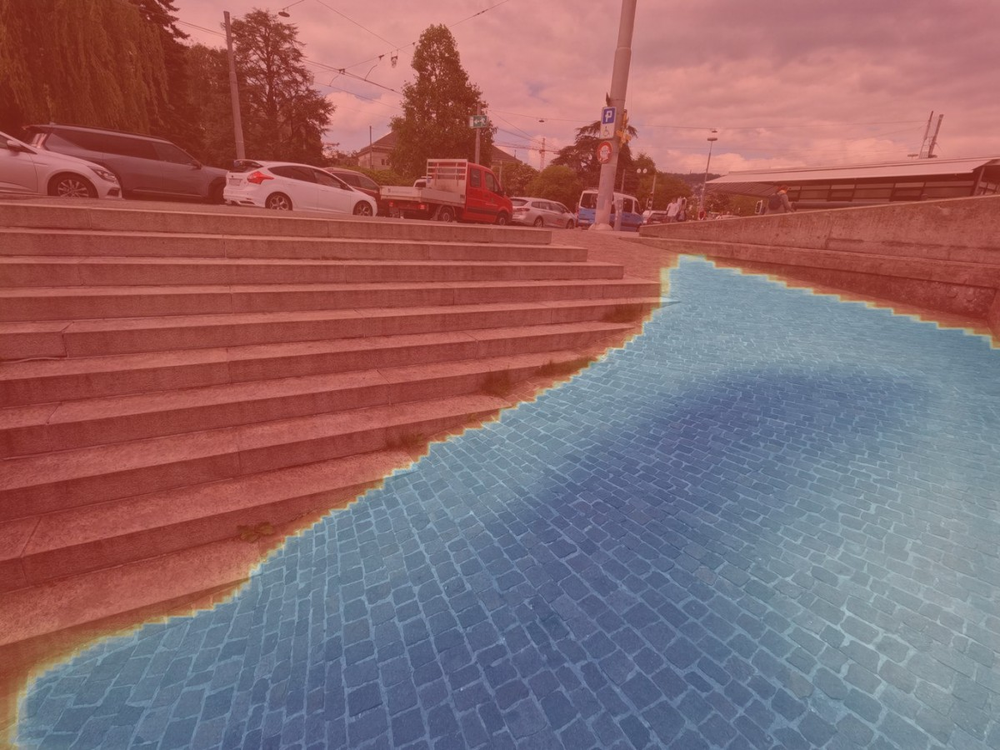
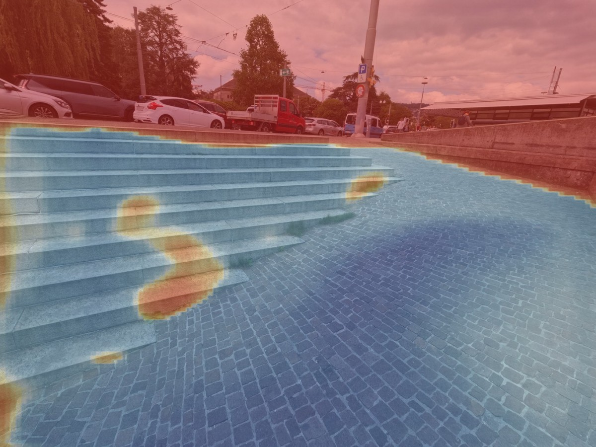

Abstract
Estimating traversability in unstructured environments requires conditioning on robot embodiment, as the same terrain can be traversable for one platform and unsafe for another. Existing methods often transfer predictions across robot morphologies through late-stage trajectory filtering rather than encoding platform constraints in the learned representation. We propose Capability-Aware Traversability (CAT), a unified framework that embeds physical limits directly into the spatial feature space. CAT uses an interactive annotation pipeline grounded in physical trajectories to generate dense supervision masks and modulates semantic terrain maps with robot-specific traversability vectors through Spatially-Adaptive Denormalization (SPADE) blocks. Across human-annotated and trajectory-aligned datasets, CAT leads all ranking-based metrics, improving AUROC by 11.0% over the strongest baseline on physically executed trajectories and AUPRC by 15.8% on human traces. Ablations show that spatial conditioning and per-robot prototypes produce capability sensitivity beyond generic path prediction. Real-world deployments on a legged quadruped and a wheeled skid-steer further demonstrate embodiment-aware obstacle avoidance on embedded hardware at 4.8 Hz.
Traversability Depends on the Robot
Drag the divider — or focus it and use the arrow keys — to compare the two selected profiles.


Approach

Visual-semantic encoding
Frozen DINOv3 encodes RGB and depth into fused visual features, while frozen CLIPSeg turns terrain prompts into per-pixel semantic maps.
Capability conditioning
A per-robot traversability vector scores how suitable each terrain class is for the platform and modulates the semantic channels, so the same observation can yield different predictions for different robots.
SPADE decoding & readout
The modulated semantic map conditions a SPADE decoder that fuses it with visual features; traversability is the cosine similarity between each pixel and a robot-specific prototype.
Trajectory-grounded supervision
Physically executed trajectories anchor dense training masks, expanded with GroundingDINO, SAM 2, temporal propagation, and human refinement.

Results
We evaluate whether CAT aligns with human judgments and physically executed trajectories, and whether its conditioning and prototype choices are responsible for capability sensitivity.
| Evaluation lens | Evidence | Question | Primary readout |
|---|---|---|---|
| Human alignment | NaviTrace human-validated traces | Does CAT recover terrain judged safe by people? | Mean trav., AUROC, AUPRC, exterior activation |
| Trajectory alignment | Held-out sequences and executed robot paths | Does CAT recover terrain the robot physically traversed? | Mean trav., AUROC, AUPRC, exterior activation |
| Component attribution | Conditioning and prototype ablations | Which design choices create capability sensitivity? | Path-vs-Rest and Embodiment AUROC |
Interpretation: Pixels outside an annotated or executed path are unobserved, not verified obstacles; ranking metrics measure path alignment rather than complete safety classification.
Comparison with Prior Methods
| Method | NaviTrace · human alignment | Held-out · trajectory alignment | ||||||
|---|---|---|---|---|---|---|---|---|
| Mean ↑ | AUROC ↑ | AUPRC ↑ | Ext.@90R ↓ | Mean ↑ | AUROC ↑ | AUPRC ↑ | Ext.@90R ↓ | |
| WayFAST (RGB) | 0.487 | 0.525 | 0.041 | 0.756 | 0.498 | 0.623 | 0.295 | 0.679 |
| WayFAST (RGB-D) | 0.880 | 0.791 | 0.146 | 0.433 | 0.785 | 0.838 | 0.641 | 0.372 |
| W-RIZZ (RGB) | 0.592 | 0.749 | 0.094 | 0.458 | 0.569 | 0.851 | 0.554 | 0.284 |
| CAT (Ours) | 0.770 | 0.794 | 0.169 | 0.424 | 0.880 | 0.945 | 0.832 | 0.143 |
CAT provides the strongest overall path alignment across both evaluation distributions. The qualitative examples show the same pattern. In the rocky passage, CAT confines high traversability to the corridor instead of the surrounding walls. In the urban scene, it preserves a continuous path along the open pavement while suppressing the pedestrian, barriers, and adjacent structures. The baselines either spill onto surrounding surfaces or recover only fragmented paths.

Ablation Studies
| Component | Variant | Path AUROC ↑ | Emb-W ↑ | Emb-L ↑ |
|---|---|---|---|---|
| Conditioning | Uniform capability | 0.950 | 0.543 | 0.517 |
| Concatenation | 0.944 | 0.541 | 0.524 | |
| Global modulation | 0.951 | 0.549 | 0.530 | |
| Prototype | Shared prototype | 0.942 | 0.540 | 0.497 |
| Multiple prototypes | 0.938 | 0.550 | 0.521 | |
| CAT (full) | 0.945 | 0.567 | 0.540 | |
The ablations separate generic path prediction from capability awareness. Changing the conditioning or prototype design leaves path recovery broadly intact, but weakens the model’s response to the queried robot. This suggests that spatial conditioning and profile-specific prototypes primarily support embodiment awareness rather than generic path prediction.
Citation
@unpublished{capezzuto2026cat,
title = {Towards Capability-Aware Traversability Navigation for Unstructured Environments},
author = {Capezzuto, Gianluca and Tommaselli, Felipe and Angarola, Matheus P. and Godoy, Ricardo V. and Becker, Marcelo},
note = {Manuscript},
year = {2026}
}Acknowledgments
The authors thank João H. Aléssio for his dedicated assistance during the field deployments. His support with robot operation and on-site logistics was essential to completing the experimental campaign. This work was supported by the São Paulo Research Foundation (FAPESP), Grants #2025/22381-3, #2025/20858-7, and #2025/04308-7; and by Petróleo Brasileiro S/A – Petrobras, using resources from the ANP R&D clause, in partnership with the University of São Paulo (USP) and the Fundação de Apoio à Física e à Química (FAFQ), under Cooperation Agreements #2023/00016-6 and #2023/00013-7.